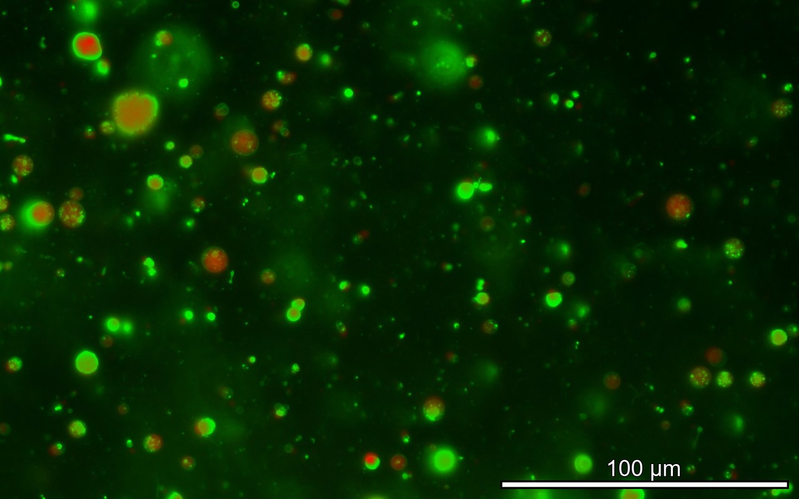
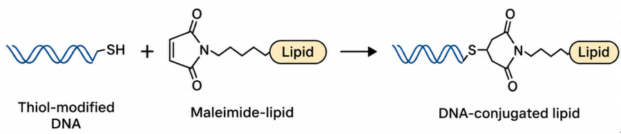
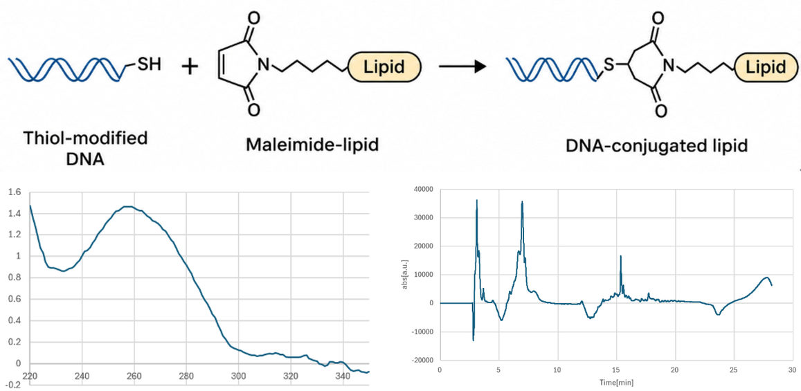
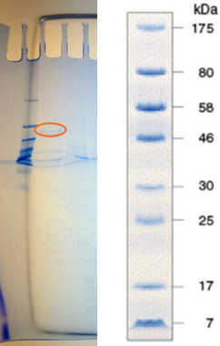
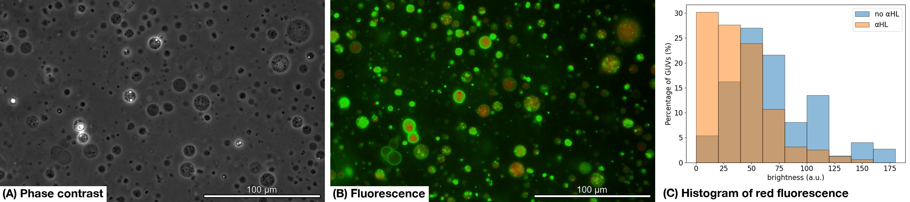
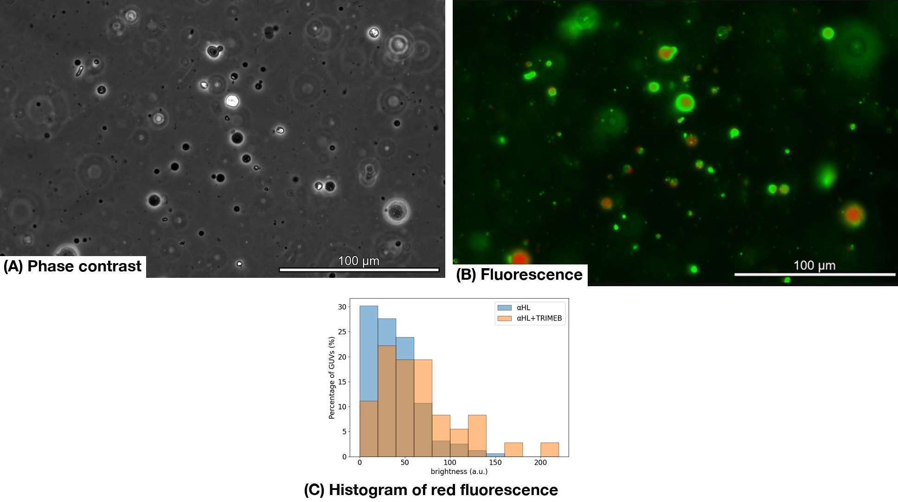
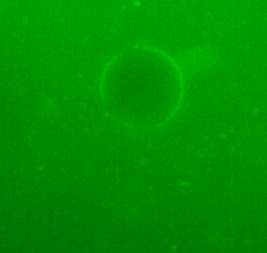
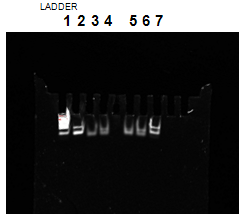
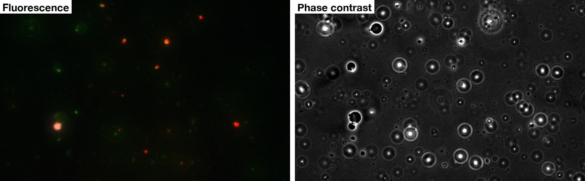

Experiment

Abstract
The aim of the experiments was to connect GUVs specifically through DNA and to exchange materials between the GUVs. We made GUVs by the emulsion transfer method and confirmed their formation by fluorescence observation. Next, we formed nanopores in the GUV membrane with αHL and confirmed that a fluorescent substance flowed out. We then confirmed that TRIMEB could block the nanopores. After that, we introduced DNA to the GUV surface using DNA-conjugated lipids and tried to connect GUVs through DNA. Some GUVs were connected, but the connection efficiency was low. We think the reason is that the centrifugation during GUV formation moved the DNA-conjugated lipids to the inside of the GUVs, so the DNA density on the outer surface became low. In the future, we will add DNA-conjugated lipids after GUV formation to control the DNA density on the outer surface, and aim for efficient GUV connection and material exchange.
GUV Preparation
Method
We made GUVs by the emulsion transfer method [1]. The procedure has two steps.
Making the lipid-containing oil
The lipids were dissolved in chloroform.
- The chloroform was evaporated with nitrogen gas in a glass tube.
- The tube was dried in a vacuum desiccator for 1 hour to form a lipid film.
- 300 µL of mineral oil was added.
- The lipids were dispersed in the oil by sonication at 60 °C for 60 minutes.
Making GUVs
- The inner aqueous solution was mixed with the lipid-containing oil.
- The mixture was vortexed for 30 seconds to form a W/O emulsion.
- The emulsion was gently layered on the outer aqueous solution.
- It was left for 5 minutes.
- It was centrifuged at 3000 × g and 24 °C for 30 minutes, and then at 5000 × g and 24 °C for 10 minutes.
Show details about this experiment
Results
Fig. 1 shows the GUVs we made.

We can see green fluorescence on the membrane and red fluorescence inside, so the GUVs were made correctly.
DNA Purification
Method
In this project, DNA is conjugated with maleimide-functionalized lipids through a thiol–maleimide coupling reaction to generate lipid-conjugated DNA.
The resulting lipid-conjugated DNA is then inserted into the GUV membrane to produce DNA-functionalized GUVs.

We purified the DNA with the following steps.
- The target DNA was captured with gel balls.
- The DNA was reacted with a lipid that has a maleimide group.
- Only the DNA bound to the maleimide lipid was collected by HPLC.
- The concentration was measured by absorbance.
Results
Fig. 2 shows the results of HPLC and the absorbance measurement.

In the HPLC analysis, a peak appeared at a location where neither DNA nor maleimide-conjugated lipids had been observed.We interpreted this third peak as lipid-conjugated DNA.
We performed an absorbance measurement to confirm whether the solution recovered at that peak contained DNA. As a result, we observed an absorption peak at 260 nm specific to DNA, leading us to conclude that the solution contained DNA.
α-Hemolysin Purification
Method
We purified αHL with the following steps.
- The αHL plasmid was expressed in E. coli.
- The protein was purified using the His-tag.
- The sample was desalted and dissolved in buffer (20 mM HEPES, 150 mM NaCl, pH 7).
- Electrophoresis (28 mA, 60 min) was performed to check the purification.
Show details about this experiment
Results
The results in Figure 3 show that a band appears between 30 kDa and 46 kDa.
Previous studies have shown that a band for αHL appears around 33 kDa on electrophoresis, and the results in Figure 3 are consistent with this[2].
Therefore, it can be concluded that alpha-hemolysin was successfully purified.

Pore Formation in GUVs with α-Hemolysin
Method
We added αHL to the inner aqueous solution of the GUVs in Fig. 1.
Show details about this experiment
Results
Fig. 4 shows the GUVs we made.

The red fluorescence has gone out, so the contents come out of the GUVs. From this, we think that nanopores were formed in the GUVs.
The figure below shows the distribution of red fluorescence both with and without the addition of αHL.
From this distribution, it can be seen that the brightness is lower when αHL is added. This confirms that the red fluorescence has been lost and that the fluorescent molecules have escaped through the holes opened by alpha-hemolysin.
Blocking the Pores with TRIMEB
Method
We added 25 ng/mL of alpha-hemolysin to the inner layer and 40 mM torimebu to the outer layer, and then checked whether the holes created by the alpha-hemolysin had been sealed.
Show details about this experiment
Results
Fig. 5 shows the GUVs made by adding TRIMEB to the outer aqueous solution of Fig. 4.

This figure shows the distribution of red fluorescence with and without the addition of TRMEB.
This distribution indicates that the addition of TRMEB makes it more difficult for fluorescent molecules to escape via alpha-hemolysin.
Attaching DNA to GUVs
Method
We added DNA to the inner aqueous solution of the GUVs and then stained the GUVs with SYBR Gold. The GUVs used here are different from the GUVs used so far: they do not contain NBD-PE.
Show details about this experiment
Results
Fig. 6 shows the stained GUVs. We can see fluorescence around the membrane. From this, we think that the DNA was inserted into the GUV membrane.

DNA Receptor Dimerization
Method
We used gel electrophoresis to test whether complementary DNA receptors form dimers in solution without GUVs and whether noncomplementary pairs show nonspecific association.
We tested all six pairwise combinations of L1, R1, L2, and R2 on a 10% polyacrylamide gel. Each strand had a target concentration of 0.1 µM before adding loading buffer. The gel was run for 60 minutes at 25 °C with settings of 100 V and 20 mA.
Results

Two closely spaced bands are visible in lanes 2 and 7. This mobility pattern is consistent with the presence of more than one DNA species in each of these samples.
Connecting GUVs with DNA
We prepared three kinds of GUVs with DNA by the method in the previous section. We adjusted them so that the fluorescence inside was red (sulforhodamine B), none, and blue (Alexa647), in this order.

Only a very small part of the GUVs were connected as intended. We think this is because centrifugation after adding DNA to the inner aqueous solution made most of the DNA-conjugated lipids face the inside, so the surface density became much lower than we intended. We expect that this will improve if the DNA-conjugated lipids are added after the GUVs are made.
Discussion
We could not show by experiments the main idea of this project, that is, to connect GUVs specifically with DNA and to exchange materials between them. However, we confirmed that we can make pores in GUVs with αHL and block them. If we can add DNA to GUVs from the outside and adjust the surface density, we think that we can confirm ALiGN by experiments.
References for the Experiment
[1] Pautot, S., Frisken, B. J. & Weitz, D. A. Production of unilamellar vesicles using an inverted emulsion. Langmuir 19, 2870–2879 (2003). https://doi.org/10.1021/la026100v
[2] Chatterjee, A., Roy, A., Satheesh, T., Das, P. P., Mondal, B., Kishore, P., Ganji, M. & Dutta, S Structural insights into pre-pore intermediates of alpha-hemolysin in the lipidic environment. Nature 16, 6348 (2025). https://doi.org/10.1038/s41467-025-61741-x